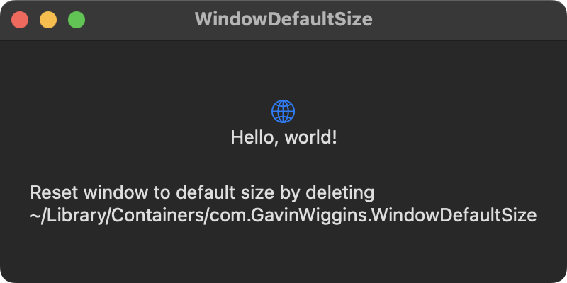

The default window size in this example is set to 400x200. If the window size is changed by dragging the corner or side, then the new size becomes the default size when the app is relaunched. Delete the app's container to restore the app to its default state.
// WindowDefaultSizeApp.swift
import SwiftUI
@main
struct WindowDefaultSizeApp: App {
var body: some Scene {
WindowGroup {
ContentView()
}
.defaultSize(width: 400, height: 200)
}
}
// ContentView.swift
import SwiftUI
struct ContentView: View {
var body: some View {
VStack {
Image(systemName: "globe")
.imageScale(.large)
.foregroundColor(.accentColor)
Text("Hello, world!")
.padding(.bottom)
Text("""
Reset window to default size by deleting
~/Library/Containers/com.GavinWiggins.WindowDefaultSize
""")
}
.padding()
}
}

Swift Programming for macOS © 2023
Built by Gavin Wiggins